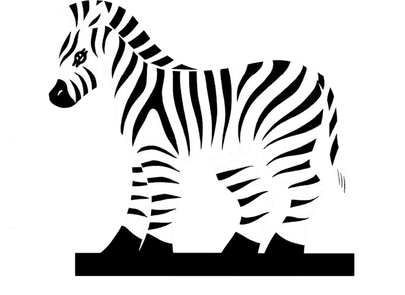

What happened when three people set out to prove that a company can grow without growing at any cost. The Impact Journey Report 2021-2023, in seven stops.
We founded Zebras and Company in March 2021 to back zebra companies: businesses that pursue social and economic goals together, over long horizons, in mutual benefit with their communities. Three years on, we wrote this report not as a typical impact report but as a letter from us, who are just a little further down the road, a kind of travel diary of what we have learned by walking alongside zebra companies.
This site takes the report's argument and turns it around. Proof first, definition second, the money, three cases, the criticism we still cannot fully answer, why the idea took root here, and then a pen for you. The report summarizes our activities up to fiscal year 2023.
Stop 01
It workedA three-person company changed national policy
Three people and 88.5 million yen put "zebra companies" into Japan's national strategy in twenty-seven months, and the state then funded twenty regions to try it.

3
co-founders: Yohei Azakami, Yoshi Tabuchi, Yuji Suyama
88.5million yen
capital at founding
2021.03.12
Zebras and Company Inc. established, Tokyo
The three came from the three worlds they wanted to change: Tabuchi from impact investing, Suyama from the Ministry of Economy, Trade and Industry and then venture capital, Azakami from marketing and creative direction. The report's own explanation for what happened next is that "the three founders came from their respective target industries. Acting as translators, they listened empathetically to each sector, and communicated their ideas and activities through dialogue."
What happened next
In June 2023, zebra companies were written into the Japanese government's Basic Policies (Basic Policies for Economic and Fiscal Management and Reform)A government policy document outlining Japan's core economic and fiscal strategies. It specifies concrete implementation measures toward goals such as economic growth and fiscal soundness, is updated annually, and serves as a key guideline for major policy decisions. (Glossary, pp.124-125) and its Grand Design and Implementation Plan for New Capitalism. The text reads: "Additionally, efforts will be made to create and promote small and medium-sized enterprises that serve as drivers for solving social challenges in the rural region and attract impact investments (zebra)."
It did not happen overnight. In 2022 the Small and Medium Enterprise Agency introduced the concept in its White Paper on Small and Medium Enterprises. Z&C presented at a Liberal Democratic Party meeting, where policymakers said the idea "should be positioned as a national strategy." Z&C then joined the Agency's study group on ecosystems for solving regional social issues, which produced the Basic Policy for Promoting Business to Solve Local Challenges, and from that policy, a pilot.
600million yen
total budget of the Regional Pilot Project
20
regions selected
25million yen
maximum per company, plus support setting impact metrics and strategy
110+
applications submitted
Selected companies receive money and something the report treats as equally important: support in setting impact metrics and strategies, redefining vision, and sharing knowledge with the other participants. Two of the selected examples the report names are Nozawa Onsen Kikaku in Nagano and the Iwamiginzan Lifestyle Tourism Research Institute in Shimane. Both appear again later on this page. The report notes that the application process alone "prompted over 110 teams to discuss how they could contribute to solving local challenges."
Who holds up a local zebra company
The Small and Medium Enterprise Agency's Basic Policy describes the actors around a local zebra company and what flows between them. From the report's diagram on p.55.
Local zebra companies and projects addressing local challenges
Borderless Japan
Venture for Japan
Community Foundation JAPAN
Companies interested in regional revitalization, including large corporations such as Japan Post and companies using the Corporate Furusato Nozei system
Connect with communities
Regional impact funds
Zebras and Company
Investors
Policy-based financial institutions
Foundations such as SIIF
Government subsidies
Contribute to solving local challenges nationwide
Borderless Japan
SIIF
SIMI
Zebras and Company
Share know-how across communities that face similar issues; advance inclusive growth throughout Japan
Some organizations fulfill multiple roles.
They told me, "This can be a real business," and even claimed, "We'll be profitable within three years." Pretty confident, huh? ... And to think they actually turned profitable in three years, I mean, what a surprise.
Stop 02
What a zebra isThe definition Z&C refuses to fix
A zebra company balances social and economic value. Z&C has deliberately refused to turn that into a checklist, which is a position, not a gap.
When we began in 2021, we summarized zebra company management into four features, alongside the three characteristics advocated by Zebras UniteA global community leading the movement of "zebra companies," which aim to balance profit and social contribution. It fosters collaboration among zebra companies, building networks and sharing knowledge to promote sustainable business practices. (Glossary, pp.124-125). Many people asked us for a clear definition. We felt it was too early to define it in a checklist-like manner, and we did not think it was right to have it defined so rigidly in the first place. Three years on, the two lists below still describe what we mean: characteristics that view zebra management as a path to be explored over the long term.
The 3 characteristics of zebra companies
Advocated by Zebras Unite
Prioritizes both social and economic goals and values mutualism, or a coexistence as a group or herd.
Challenges socially complex problems that require greater awareness and understanding.
Searches for new financial models that fit zebra companies, rather than fitting into existing financial systems.
The 4 characteristics of zebra management
Summarized by Zebras and Company
Aims to create a better society through business growthMaximizing revenue and profits is not the end goal; rather, they focus on addressing societal issues as the purpose of their business.
Relies on diverse assets such as time, creativity, and communityThe business is not a simplistic venture that can succeed in a short time with funding alone, but rather one that addresses complex challenges with intertwining elements.
Adopts a long-term and inclusive management stanceRather than maximizing shareholder value in the short term, management is conducted with the intention to make all stakeholders happy in the long term.
Shares vision and executes it with aligned actionsThe business recognizes the trade-offs between diverse elements, and it also envisions a concrete to-be vision that it acts on daily.
A "zebra company" is more than just a new type of enterprise; it contains the essential question, "for whom and for what purpose is management conducted?"
Ten founders, one question
What does "balancing social impact and economic viability" mean to you?
The report asked its portfolio companies and advisory clients. Ten answered. They do not agree, and that is the point. Ask them in any order.
Choose someone to ask.
A state where each person can work in their own way while having fun, enriching the people around them and society as a whole, and at the same time ensuring that they live in their own authentic way, from food, clothing, and housing, to daily life.
Toshiko FujimotoBusiness with Attitude by FIGARO
When you consider the fundamental purpose of a business, it is to create or renew a certain state of society. The economy can be a driving force to make that change a going concern. Social value comes first, and economic viability exists as an option to achieve it.
Yuya NishimuraEssence, Inc.
It means that business growth (economic viability) is linked to a state where the people we interact with are happy. It also means an economy that preserves and values culture, serving as a reminder not to let the economy run unchecked or to fall into the illusion of limitless growth. Businesses should operate with an awareness that social capital is finite.
Tadashi MatsubaIwamiginzan Gungendo Group
Economic viability means generating sales and profits at a scale that keeps stakeholders happy and allows reinvestment in the community. Beyond solving social issues, social impact is about acting ethically; avoiding behaviors or methods that make stakeholders or customers uncomfortable.
Miai KobayashiHitobito, Inc.
"Social impact is the goal, economic viability is the prerequisite." Without economic viability, the business cannot be sustained or expanded, and social impact cannot be achieved. Conversely, economic viability can exist even without a purpose, or with a different one.
Hidenori KuroyanagiLinklusion, Ltd.
Essentially, social impact and economic viability can be balanced, and it is only when they are balanced that both become sound and sustainable. Balancing them requires will and creativity, and that is the role of management.
Tatsunari TakanoEiji Press Inc.
In management, the two are inseparable. Without economic viability, a business can't take root in society; and when social demand is strong, the economics will follow. The balance simply varies in how and when each side takes shape.
Takaya TaguchiHelical Fusion
What matters is having your own definition of success. Not a success model confined to a single set of values, but one driven by your dreams, the past you want to rewrite, and the desire to create an original, alternative life, history, and future. That comes before even creating an original business.
Yasuhiro TamuraBlack Star Label
Keep asking questions. Is your business truly creating the impact you envision? What will you do, or not do, to achieve it? How will you earn and reinvest revenue? Continuously exploring these questions with your team and stakeholders is key to how zebra companies balance social impact and economic viability.
Daisuke SaigusaShiojiri City Promotion Public Corporation / sunaba
It means ensuring that we are creating hope for all stakeholders through business growth. It is making decisions after considering the impact on a wider system beyond just the business. It is being in a state where our corporate activities are supported by a wide range of stakeholders beyond just our direct customers.
Ryo IshidaNEWLOCAL Inc.
YouYour answer, kept on this device
Parent, sibling, foal
Zebra companies are often assumed to belong to the startup world. In Japan, long-established and regional businesses responded immediately, and from that response came three categories.
Parent zebras
Companies that conduct zebra-style management themselves while also supporting sibling zebras and fostering foal zebras. Often large, listed companies with top-level market share in their industry, who use various forms of capital they own to collaborate with other companies that share the zebra mindset.
Examples: Japan Post, Marui, Yamaha Motor, Taiho Pharma
Sibling zebras
Zebra companies that, while not publicly listed or having massive sales, play an important role in their region or industry and serve as role models for foal zebras. Long-established regional companies, which hold a unique presence in Japan, are perfect examples.
Zebra companies that are just starting out, perhaps as an extension of a personal business, and aim to grow to a certain scale to make an impact on society.
A company that solves a social issue and generates profit cannot be called a zebra if its employees are struggling with low wages. If solving one problem creates burdens elsewhere, that "social value" is fiction.
We are often asked for a clear definition of a "zebra company," but we have intentionally chosen not to fix one. Instead, we want each organization to pursue its own interpretation of what a zebra company can be.
Stop 03
How it is financedMoney has a color
Z&C built its own capital structure because a fund could not do what it needed, then built instruments so zebra companies could raise money without accepting a timeline that kills the mission.
Z&C is not a fund
Because Z&C invests, it is sometimes called a VC fund for zebra companies. It is a joint-stock company that raised capital specifically for investment, with a structure designed, in the report's words, "to allow for greater flexibility in capital gains and more freedom in exit strategies in the long term." The comparison from the report:
Dimension
Typical investment fund
Z&C model
Vehicle
Fund
Corporation
Investor role
Investors (limited partners)
Shareholders
Term
10 years
None
How investors are paid
Distribution of total proceeds at redemption
Annual dividends when Z&C earns profit, plus share buyback
Operating costs
Management fees from fund capital
Fees from management support activities
Commitment to investment
Exclusive, required
Limited (focus on overall zebra ecosystem development)
Two features carry the structure. The report: "in designing financial returns, we eliminated the 'time limit' commonly found in funds, thereby enabling a variety of exit strategies," and "we redefined the relationship between shares and voting rights. By limiting voting rights, we removed many of the restrictions typically imposed on fund managers." The legal form was built with Mori Hamada & Matsumoto.
The honest line underneath: at founding, the zebra concept "was not yet widely recognized, making it difficult to sustain a management fee model that assumed large-scale funding," and the typical five-year exit "was often incompatible with the long-term vision of zebra companies." So advisory work pays the bills. It is also where the theory on this page comes from.
Money has a color
There is a saying that money has no color. In investment, the report argues, it does: "Who provides the money, with what intentions, and what outcomes or timeframes are they expecting? These factors can make the same amount of money carry completely different meanings." Venture capitalists, banks, angels and foundations each bring a different color, and "growth schemes premised on IPOs or M&A, or loan systems requiring collateral and track record, frequently cannot accommodate" a company that wants to be self-sufficient over decades.
Z&C offers two services on this premise. Finance for Purpose helps a company design "how, from whom, and under what conditions they receive funds." Zebras Finance Design takes the longer view, shaping financing to fit purpose and governance. Two instances from the report. For the Iwamiginzan Lifestyle and Tourism Research Institute in Shimane, Z&C helped build a theory of change and business plan centered on community rather than tourist numbers, and mapped the stance and role of every funder around it. For Linklusion in Myanmar, Z&C helped clarify the business hypotheses and theory of change, then raise from corporate and angel investors after a coup had closed the usual doors. That story is in the next stop.
"In zebra company fundraising, what matters more than the diversity of funding schemes is how to connect with people who resonate with the company's purpose. We act as translators and connectors of values between companies and investors."
LIFE type1A long-term investment structure for future fairness
The scheme Z&C designed for its first equity investment, Hitobito, when the existing options did not fit. The report: "Conventional VC models, which tend to prioritize rapid growth, early IPOs, or M&A exits, are often based on short-term outcomes. As a result, discrepancies can emerge between an entrepreneur's original vision for the business and their own life plans." The question Z&C asked itself was "What kind of investment truly serves the entrepreneur?"
Agree, then keep talking
Both parties agree on growth objectives and return expectations at the time of investment, and "the goals are to be revised through ongoing dialogue."
Return value when milestones are met
"Once certain milestones are achieved, if both management and shareholders agree, the company may conduct a share buyback to return value to investors." The terms also allow a shift to other forms of return as time horizons, market conditions or growth stage change.
Accept a changeable future
"Rather than fixing the future too rigidly, LIFE type1 is built on an acceptance of a 'changeable future.'" Aspirations like "building a company that remains rooted in the community for generations" or "creating a business that can be passed on to the next generation" become viable precisely because the scheme does not assume short-term returns.
The buyback conditions, as the report prints them
Applies only if sales exceed ● yen in revenue (not triggered if the business does not grow)
If requested by shareholders holding a majority of voting rights other than the management shareholders
The company may conduct a share buyback, capped at the lower of "●% of revenue," "●% of cash and deposits," or "●% of retained earnings"
The report leaves the threshold and percentages blank. So does this page. The mechanism is the point.
"In an era where investors' values and philosophies are increasingly under scrutiny, this is not merely a matter of goodwill or idealism; it is an attempt to demonstrate a sustainable framework for what 'zebra-style investment' can mean."
The investor has a Theory of Change (TOC)A model that clarifies the pathway to achieving social change. It provides a framework that logically connects activities to their intended outcomes. It helps set goals at each stage and supports strategic decision-making and progress evaluation. (Glossary, pp.124-125). So does the company. Z&C's rule is that the two must reinforce each other: "one must strategically design a relationship where realizing the portfolio company's TOC contributes to achieving one's own TOC." When Z&C invested in Hitobito, the goal it set for itself was "to deepen the understanding of agricultural and women's health issues." Three years later Hitobito's growth and its stronger ties to regional financial institutions had delivered Z&C's own TOC objective of "increasing financial flow." The report's hope is that parent and sibling zebras adopt the same lens when they invest in foals.
I think the ideal form of zebra investment can take several forms, depending on investor intent. The first model is for those who simply pursue financial returns. In this case, while the returns themselves would be handled conventionally, voting rights need rethinking. ... The second model is investment driven by those who resonate with the mission. In this case, it may not have to take the form of equity. ... In some cases, a lending model like social banking could be more suitable. The third is an alliance model, where established firms and zebra companies share resources.
Two maps, three years apart
Z&C drew a theory of change at founding and redrew it in 2024. The first put Z&C at the center, implementing the concept in society. The second puts zebra companies at the center and Z&C at the edge. An organization drawing itself smaller on its own map.
2021
Theory of Change: Drawing a Map of Change
Zebras and Companyat the center
"To realize our vision of a 'thoughtful, healthy and enjoyable society,' we began by building a movement and a community. As our network grows through information sharing and dialogue, social issues become more visible, leading to the next actions. By theorizing the practical knowledge gained through investment and management advisory and sharing it openly, we cultivate the ground for collaboration with other players. The significance of zebra companies takes root in a society where diverse actors – financial institutions, government, the media, and citizens – intersect. This cycle is the process of 'change' as we see it."
pp.12-13
New
From a Movement Created by Zebras and Company to a Movement Woven by Zebra Companies
Zebra companiesat the center
"The spark of the Zebras movement ignited by Z&C is now spreading beyond us, and is becoming a movement that belongs to zebra companies and their supporters. Zebra companies will herd together, and will be driven through a strong will and vision to create social impact through business activities by involving players in their respective regions and fields. Then, as connections are made across fields and regions, herds of zebra companies will form, eventually growing into a major swell that moves society as a whole."
pp.104-105
The English edition of the report carries both diagrams as artwork we cannot yet set in type. Until Z&C sends editable English versions, each map is shown here as its title and the report's own description of it.
What Z&C asks before it invests
Fifteen questions in four categories, from Z&C's zebra-style due diligence. The report's note: "At the time of investment, perfection in all of these areas is not required. Rather, we consider whether Z&C's own capabilities can complement any gaps and form a mutually supportive relationship."
Alignment with Z&C's TOC
Alignment with the vision
How does this business contribute to realizing a "thoughtful, healthy and enjoyable society"?
Model potential
Does this business have the potential to increase the number of zebra companies, investors, and supporters, thereby expanding capital flow?
Additionality
Is it a model that other companies might want to emulate in terms of future scale and profitability?
Social impact
Clarity of impact
What social impact does the business aim to achieve? How will it contribute to transforming society?
Ripple effect
Whose awareness or behavior will this business influence or change, and in what ways?
Complexity of the social issue
How is the issue currently recognized or understood? How should that understanding evolve?
Alignment with the business
Does the growth of the business directly lead to an increase in social impact?
Business viability
Market potential
Who are the customers? What pain points are being addressed?
Profitability
Through what business model does the company generate profit?
Competitive advantage
What advantages does it have compared to others (including unicorn-type business models)?
Use of funds
What will the funds be used for, and how will they be utilized?
Financial soundness
Are there any major financial concerns (e.g., cash shortages, excessive debt, etc.)?
Management team
Management capability
What knowledge, experience, and networks do the founder and management team possess in relation to the business they are pursuing? What additional capacities will be required going forward?
Management attitude
In what aspects can a long-term, inclusive, and mutually beneficial management approach be observed?
Openness
Do the founder and management team demonstrate openness and transparency?
The full LIFE type1 structure, the capital structure diagrams and the due diligence process are in the report, pp.40-51.
Three different kinds of proof with no overlap: a company that grew on metrics a term sheet ignores, a company that survived a coup by changing who owned it, and a company that sold itself while keeping its purpose out of the buyer's hands.
Case 1
HitobitoKunimi Town, Fukushima · Miai Kobayashi, CEO
Portfolio company. Z&C's first equity investment, February 2022.
Case photography to come from Z&C
Hitobito delivers non-standard peaches from Fukushima to Tokyo the same day, so they are not thrown away. In 2020 it launched a feminine care brand, "Ashita watashi wa kaki no ki ni noboru" (Tomorrow, I will climb a persimmon tree), made from the tannin-rich skins discarded in the production of Anpo-gaki, the region's semi-dried persimmons.
Before Z&C, the company's refusal to put its own growth above everything else "conflicted with the conventional world of startup investing and faced widespread criticism. It was labeled an 'excuse' or disparaged with comments like 'women aren't aspirational.'" Z&C, in Kobayashi's words, "for the first time, affirmed our approach." The investment scheme LIFE type1, described in the previous stop, was designed for this deal.
What Hitobito and Z&C measured, 2021 to 2023
154%
company-wide sales growth rate, 2021 to 2023; cosmetics business 274%
131%
growth in shipments of non-standard and unutilized produce through the new distribution structure
65,359kg
agricultural waste reduced, total 2021 to 2023
453,148yen
increase in annual net income per producer from transactions with Hitobito
3,980
participants in health literacy programs
98.9%
reported improved health literacy afterward (729 of 737 valid responses)
Then the large companies came to her. With Paramount Bed, under a METI-adopted project, Hitobito researched menopause and sleep among working women: roughly 70 percent may experience insomnia, and 93 percent of participants in the resulting self-care program reported improvement. With Japan Post and JR East it is testing a "responsible" farm-to-table supply chain that moves peaches by bullet train. The report calls the collaborations "an unexpected outcome" and "a perfect example of a zebra company."
Z&C was the first to say 'I like what you're doing.'
Two ledgers
What a term sheet would have looked at, and what actually moved. The left column is the report describing the conventional view in its own words. The right column is what Hitobito and Z&C tracked. Nothing on either side is written by us.
What a conventional investor would have seen
"traditional venture capital metrics, such as market size and growth speed"Nanako Kudo, p.59
"rapid growth, early IPOs, or M&A exits"LIFE type1, p.44
a management style "labeled an 'excuse' or disparaged with comments like 'women aren't aspirational'"Miai Kobayashi, p.62
What Hitobito and Z&C tracked
Company-wide sales: 154% growth rate, 2021 to 2023p.64
Producer income: up 453,148 yen per year per producerp.64
Employee income: improved across the board, alongside sales, profits and farmer incomesp.63, p.67
Agricultural waste diverted: 65,359 kgp.64
Health literacy: 3,980 participants, 98.9% reporting improvementp.64
Case 2
LinklusionMyanmar · Hidenori Kuroyanagi, CEO
Portfolio company. Finance for Purpose client from February 2021, then investment.
Case photography to come from Z&C
Linklusion runs two businesses in Myanmar: B2B commerce that delivers food, daily necessities and medicine to small rural shops over a logistics network "built up over six years, which utilizes not only land routes but also waterways to reach villages where even mail does not arrive," and a cloud system for microfinance institutions that lend to low-income households.
In February 2021 the military took power. The Series A Linklusion had planned for that year fell through; "Myanmar was no longer a market where VCs could invest." The company had a year of runway. Kuroyanagi went to Z&C's Suyama, who told him: "This is a business that must be preserved. It can definitely work as an investment from a long-term perspective. The chances of fundraising are high." Seven months of Finance for Purpose followed, raising from a mix of angel investment, crowdfunding, loans and grants, and then Z&C invested.
June 2021 to March 2024
12 → 392
shareholders before Z&C's investment and now, a 32.7-fold increase, mostly individual investors
515
villages served by the commerce business, 2.2 times as many
5.7×
product sales growth
109
employees, 1.3 times as many; 90% in their twenties, 60% women
220million yen
raised across two post-coup funding rounds, approximately, with Z&C's support
"Typical startups follow a fairly predetermined growth process and timeline. Zebra companies, however, have diverse equations and solutions. They can chart their own long-term growth curve." The report's own summary of what the shareholder count means: "Amidst Myanmar's challenging circumstances, numerous small-scale investments made business continuity possible. Beyond economic viability, many resonated with our long-term story and vision, turning this into a venture where the aspirations of many individuals converge."
Social value is the goal, economic value is the necessary condition.
Case 3
Eiji PressTokyo · Tatsunari Takano, CEO
Advisory client, November 2022 to the share transfer of February 29, 2024.
Case photography to come from Z&C
Eiji Press is a publisher of business and social-issue books with a stated purpose, "Publishing for Change," and a house culture of autonomy and dialogue; it published the Japanese edition of Reinventing Organizations. In 2024 it needed a successor owner and did not want to lose either.
On February 29, 2024, all of its shares went to KAYAC Inc. except one. That one share, converted into a golden share with veto rights over any change to the company's name or purpose, is held by Eiji Shuppan Wo Tsunagu Kai, a general incorporated association made up solely of Eiji Press employees. The purpose was written into the articles of incorporation as part of the deal. According to a March 2024 study by Z&C, this was "the first publicly reported case of its kind in Japan." Z&C brought case studies of succession from around the world, among them Patagonia's transfer to an environmental nonprofit and Exit to Community (E2C)A concept proposed by Nathan Schneider, a member of Zebras Unite. It refers to a model in which a company's ownership transitions from existing shareholders to a broader community such as local residents or employees. (Glossary, pp.124-125); Takano says learning about them "allowed us to think more flexibly," and the golden share came out of that. Z&C's regular question through the process was "What is most important to Eiji Press?"
share, with veto rights, held by the employees' association
5,800
shares, approximately 99 percent, transferred to KAYAC Inc.
The scheme in four steps
Amend Eiji Press Inc.'s articles of incorporation to newly define its purpose.
Establish the general incorporated association, Eiji Shuppan Wo Tsunagu Kai, owned and governed by employees.
Existing shareholders, including the founder, transfer one share to the association, convert that share into a golden share with veto rights over changes to the purpose and company name, and transfer the remaining 5,800 shares to KAYAC Inc.
Conclude a contract among KAYAC Inc., Eiji Press, Inc., and the Eiji Shuppan Wo Tsunagu Kai association.
After the agreement was signed, the employees proposed and ran an "organizational wedding" with KAYAC, "where the vows were spoken not just by the two representatives but by everyone." The succession was covered by Nikkei, Toyo Keizai Online and Business Insider, more outlets than the company expected.
If more companies can choose buyers with their purpose and intended impact in mind, pursuing what is sometimes called a "responsible exit," it would be a positive development for society.
The other seven
The report gives each of Z&C's portfolio and advisory accounts the same treatment. One line each here, with the page to turn to.
esse-senseResearch-knowledge media and grants, run as a Cooperative-Style Stock CompanyA corporate form that integrates the advantages of cooperatives, allowing members to actively participate in management. Profits and decision-making are shared among members, providing a foundation for fair and sustainable economic activity. (Glossary, pp.124-125) where every shareholder has one vote and "the company has no specific owner."p.68
NEWLOCALPlace-Based InvestmentAn investment approach rooted in a specific region, designed to contribute to local economic and social problem-solving. By channeling resources into local initiatives, it promotes sustainable growth and improves community well-being. (Glossary, pp.124-125) community building in Nozawa Onsen and Miyota, Nagano, and Oga, Akita; aiming for ten regions in five years.p.72
Iwamiginzan GungendoA "livelihood with roots" in Omori, Shimane, run on the founder's rule of "51% culture, 49% economy."p.80
Black Star LabelFilms that turn indifference toward social issues into interest, beginning with "Dance with the Issue: Our Dialogue with Electricity."p.84
madame FIGARO japon, Business with AttitudeA community of around 70 female entrepreneurs and 2,800 seminar participants, built on the idea of "startups tailored to their means."p.88
Sunaba, Shiojiri CityA civic innovation hub that turned Z&C's support methods into DIVE, a local impact investment program for ten entrepreneurs.p.92
Helical FusionA fusion-energy startup pursuing J-curve growth that still found, in Taguchi's words, "much to learn from the zebra worldview."p.100
Each company's logic model, the interviews with their stakeholders and Z&C's own account of what it did are in the report, pp.62-101.
The strongest criticism of zebra companies is stated by one of Z&C's own founding shareholders. She says she still cannot fully rebut it.
Zebra companies don't aim to go public; aren't they just avoiding growth that they could achieve?
Regarding the question posed three years ago of whether zebra companies are just avoiding growth, I still feel I cannot provide a flawless logical rebuttal.
Yet, looking back at the efforts of the companies supported by Zebras and Company, it is clear that this is far from mere avoidance. These companies tackle extraordinary challenges: sustaining business growth while, for example, preserving the prosperity of towns with populations under a few hundred, updating agricultural practices in aging regions, or driving changes in people's mindsets and behaviors. These are not easy tasks.
On the other hand, zebra-style investors are still few, and I strongly hope that more examples of funding with a "Different Scale" approach will emerge.
Stop 06
Why JapanThe ethic was already here
The word was imported. The ethic was already here. That is why the idea moved faster in Japan than anywhere else, and why Japan is now positioned to send it back out.
Where the word came from
In 2016 two founders, Jennifer Brandel and Mara Zepeda, published a blog post called "Sex and Startups." It argued that in a venture-funded world "the only pathway for companies who experience exponential growth was a rapid exit," and that companies in between had nowhere to go. Astrid Scholz and Aniyia Williams joined them, and the four launched Zebras Unite. Their March 2017 article "Zebras Fix What Unicorns Break" named the alternative. There are now chapters in more than twenty countries.
In April 2018 Yoshi Tabuchi, then working in impact investing in Southeast Asia and Japan, sat in the "Zebras Fix What Unicorns Break" session at the Skoll World Forum in the UK and "found that it mirrored his own concerns about the industry." He had been asking himself whether there was "a misalignment between the nature of capital that entrepreneurs and organizations need, and the nature of investment capital that is actually being offered." Tokyo Zebras Unite opened in November 2019. The translation that let the idea travel was zebra kigyo, zebra company.
Japan is the first island of sanity to adopt and follow this path, this dao, of the Zebra. This path includes principles from your culture like shibui, ikigai, and mottainai. From what I have learned, the Omi Merchants were also on this path, and their concept of 'Sampo-yoshi' – good for the seller, buyer, and society – was ahead of its time in naming what you love and wish to protect.
Why it landed
Overseas, zebras were a startup argument. In Japan, the report says, "when the concept of zebra companies was first introduced in 2019, we immediately saw strong interest from long-established and regional businesses as well." Companies that had been running on a long horizon for generations recognized themselves. The parent, sibling and foal typology in Stop 2 came out of that response.
Gungendo is the living instance. Its founder, Daikichi Matsuba, "often said that the guiding principle for decision-making is '51% culture, 49% economy.'" The company had been practicing the ethic for decades before anyone handed it the vocabulary. Z&C's own conclusion, in its new theory of change: "we are not creating a new type of company, but rather bringing out the potential of people and companies that already exist by shedding light on them from a different angle."
2016 to 2024
Two lanes, as in the report's own timeline spread: what happened overseas, and what happened here.
2016Global"Sex and Startups"
Jennifer Brandel and Mara Zepeda publish the blog post that starts the movement.
p.24
2017Global"Zebras Fix What Unicorns Break"
The March 2017 article introduces zebra companies to the world; Zebras Unite forms.
p.24
2018GlobalSkoll World Forum
Yoshi Tabuchi attends the "Zebras Fix What Unicorns Break" session in the UK in April and recognizes his own concerns.
p.24
2019JapanTokyo Zebras Unite
The Japan chapter is established in November 2019. "Zebras" becomes zebra kigyo.
p.24
2021JapanZebras and Company founded
March 12, 2021, Tokyo. Three co-founders, 88.5 million yen in capital.
p.6
2022JapanFirst investment, LIFE type1
Z&C invests in Hitobito in February 2022 and releases the LIFE type1 term sheet; ZEBRAHOOD 2022 is held. Zebra companies appear in METI's SME White Paper.
p.7, p.44
2023JapanNational strategy
In June 2023 zebra companies are written into the Cabinet's Basic Policies for Economic and Fiscal Management and Reform.
p.54
2024JapanTwenty regions
The SME Agency's 600-million-yen Regional Pilot Project selects 20 regions from more than 110 applications.
p.55
GlobalJapan
Japan has long embraced the spirit of sampo-yoshi (benefiting all three parties: seller, buyer, and society), so it's no surprise that zebra companies resonate here. But you shouldn't stop there. Though the zebra concept originated overseas, I hope you'll take Japan's experiences and philosophy, blend them together, and then re-export them to the world. I look forward to seeing examples of Japanese corporations investing in global zebra companies, or foreign firms supporting Japanese zebras.
Stop 07
Your mapDraw your own theory of change
The report ends by telling readers to draw their own theory of change. This page hands you the pen.
If you are thinking of starting something, we encourage you to draw your own TOC. Imagine the future, put the path to it into words, and draw the lines. It will surely be the first step in connecting you with someone else.
Z&C calls its theory of change "a navigation map to the future, showing what kind of society Z&C aims for and the route we will take to get there." The report's own tools are two: the Logic ModelA framework that consistently illustrates the relationship between activities and their outcomes. It clarifies the causal links between actions and expected results to support effective planning and evaluation of projects. (Glossary, pp.124-125), which runs from input and activity through output to short-, mid- and long-term outcomes, and the fifteen questions Z&C asks a company before investing. The tool below uses six of those questions, quoted as printed, and lays your answers out on the logic model's own frame.
Draw your own map
Six questions, one screen each. Your answers stay in this browser; nothing is sent anywhere. Come back and the draft will still be here.
Your theory of change
Imagine the future, put the path to it into words, and draw the lines. (p.13)
Not yet written
Sources in the report
Frame · Statement panel · p.1, p.126
01. It worked · Figures · p.6
01. It worked · Prose · p.1, p.21, p.27
01. It worked · What happened next · pp.54-55
01. It worked · Figures · p.55
01. It worked · Prose · p.55
01. It worked · Who holds up a local zebra company · p.55
01. It worked · Hideto Fujino · p.120
02. What a zebra is · Prose · p.25
02. What a zebra is · The 3 characteristics of zebra companies / The 4 characteristics of zebra management · p.25
02. What a zebra is · Zebras and Company · p.25
02. What a zebra is · Ten founders, one question · p.34
02. What a zebra is · Parent, sibling, foal · p.30
02. What a zebra is · Miai Kobayashi · p.62
02. What a zebra is · Yohei Azakami · p.126
03. How it is financed · Z&C is not a fund · pp.40-41
03. How it is financed · Money has a color · pp.50-51
03. How it is financed · LIFE type1 · pp.44-45
03. How it is financed · TOC × TOC · p.48
03. How it is financed · Tomoyoshi Noda · p.109
03. How it is financed · Two maps, three years apart · pp.12-13, 104-105
03. How it is financed · What Z&C asks before it invests · pp.46-47
03. How it is financed · Download pointer · pp.40-51
04. Three cases · Hitobito · Account · pp.62-67
04. Three cases · Hitobito · Figures · p.64
04. Three cases · Hitobito · Collaboration and coverage · pp.64-65
04. Three cases · Two ledgers · pp.44, 59, 62, 64, 67
04. Three cases · Linklusion · Account · pp.76-79
04. Three cases · Linklusion · Figures · pp.77-79
04. Three cases · Linklusion · Collaboration and coverage · pp.77, 79
04. Three cases · Eiji Press · Account · pp.96-99
04. Three cases · Eiji Press · Figures · p.99
04. Three cases · Eiji Press · Collaboration and coverage · pp.97, 99
04. Three cases · Eiji Press · Scheme · p.99
04. Three cases · The other seven · pp.68-101
04. Three cases · Download pointer · pp.62-101
05. The objection · The question SIIF's stakeholders asked in 2021 · p.59
05. The objection · Nanako Kudo · p.59
05. The objection · Nanako Kudo · p.59
05. The objection · Nanako Kudo · p.59
06. Why Japan · Where the word came from · p.24, p.26
06. Why Japan · Mara Zepeda · p.2
06. Why Japan · Why it landed · p.31, p.80, p.105
06. Why Japan · 2016 to 2024 · pp.6-7, 24, 44, 54-55
06. Why Japan · Tomoyoshi Noda · p.111
07. Your map · Zebras and Company · p.13
07. Your map · Prose · p.12, p.36, p.48
07. Your map · Draw your own map · pp.13, 36, 46-48